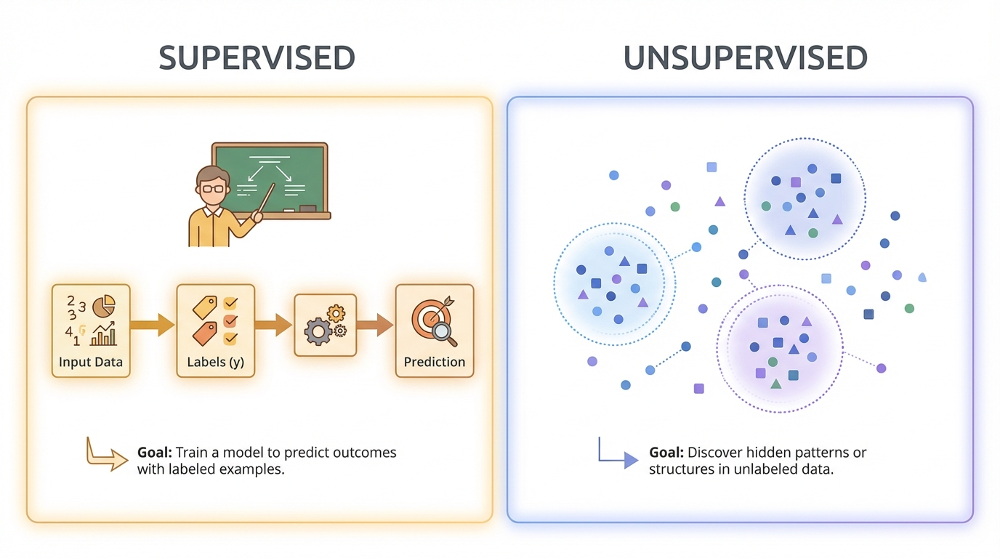
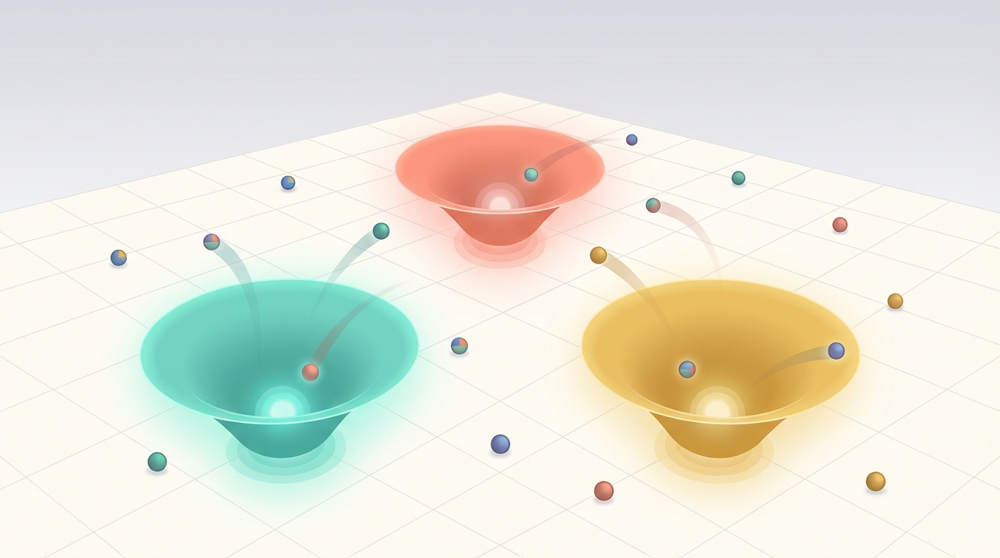
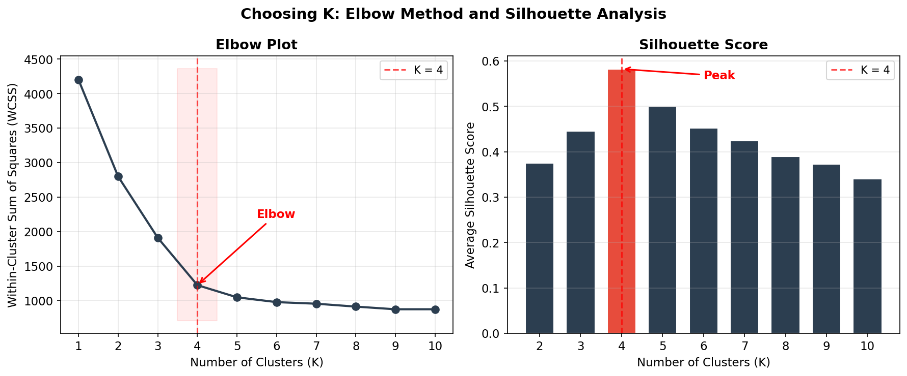
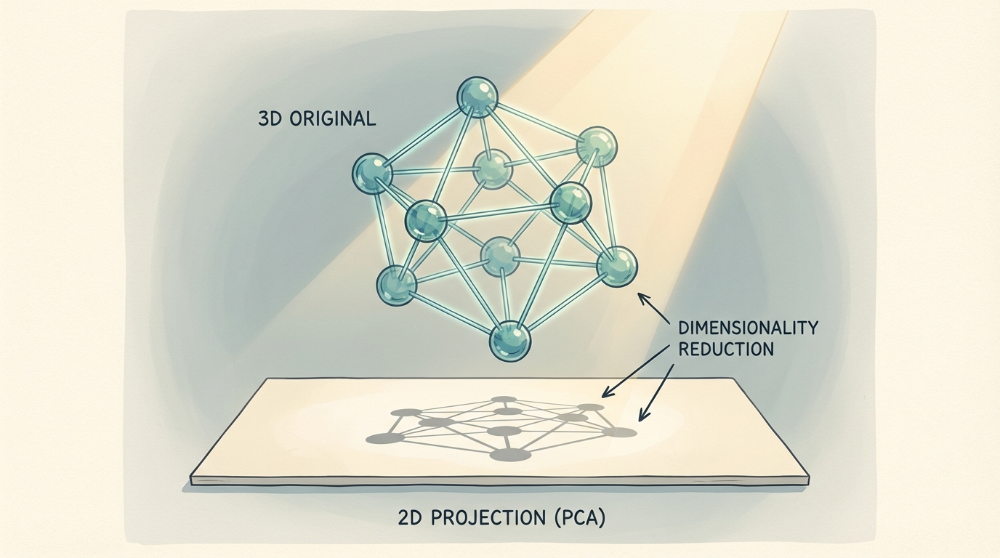
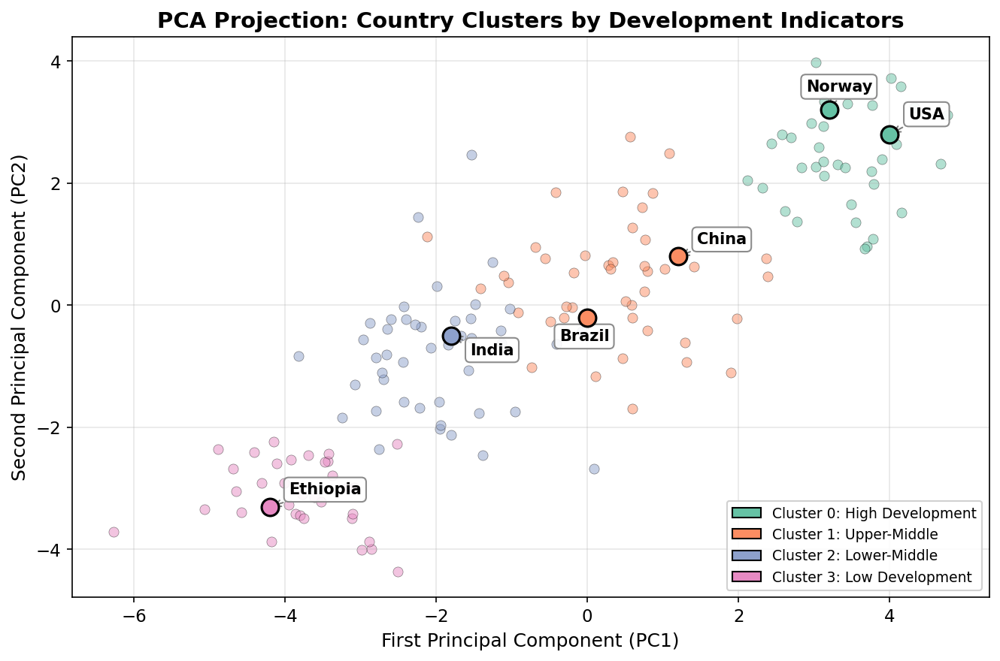
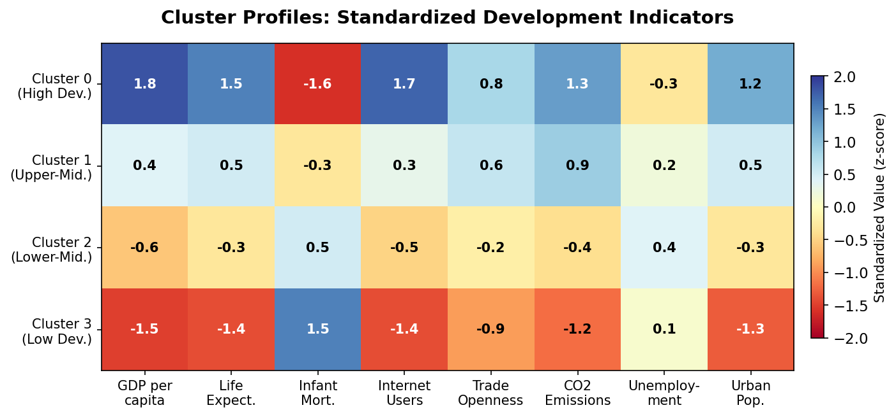

ECON 5200 • Causal ML & Applied Analytics • Chapter 22
Unsupervised Learning:
Clustering Economies
Dr. Richeng Piao
Department of Economics
Northeastern University
Learning Objectives
22.1
Understand Lloyd's algorithm and why the centroid inherits the mean's vulnerability to outliers
22.2
Apply K-Means clustering and PCA in Python with proper standardization and silhouette evaluation
22.3
Analyze clustering results using elbow and silhouette methods; explain why they sometimes disagree
22.4
Evaluate algorithmic clustering vs. expert classification (World Bank) — tradeoffs of fit vs. interpretability
Retrieval Practice
From Chapter 4
What is the arithmetic mean's breakdown point?
\(1/n\) — one extreme observation can drag the mean arbitrarily far
From Chapter 15
What happens when you make a model more complex?
Bias ↓ but Variance ↑ — the fundamental tradeoff returns today
Today's centroid = multivariate mean (Ch 4). Choosing K = bias-variance (Ch 15).
Nubank: Discovering Hidden Structure
Brazilian fintech Nubank (131M customers, Q4 2025) segmented by demographics for years. Then their data science team ran K-Means clustering on behavioral features...
The algorithm found four distinct clusters — cutting across every demographic boundary.
ARPU: $11 → $15 (mature cohorts: $26)
One unsupervised algorithm — no labels — reshaped the entire product strategy
The Concept Extension Bridge
In Chapters 12–21, every model had a target variable \(y\). Today we remove \(y\) entirely.
Chapter 4 Callback
The centroid = multivariate mean
→ breakdown point \(1/n\)
Chapter 15 Callback
Choosing K = bias-variance
Too few ↔ underfit, too many ↔ overfit
Supervised vs. Unsupervised

Clustering
Partition observations into similar groups
Canonical: K-Means
Dimensionality Reduction
Compress features while preserving information
Canonical: PCA
Poll: Most Critical Step?
You have 160 countries, 10 features. GDP ranges $300–$120K. Gini ranges 25–65. Before K-Means, which step is most critical?
Answer: Standardize First
Why B? Without StandardScaler: GDP contributes \(10{,}000^2 = 10^8\) to distance. Gini contributes \(10^2 = 100\). You're clustering on one variable while ignoring nine.
$$z_{ij} = \frac{x_{ij} - \bar{x}_j}{s_j}$$
K-Means: Lloyd's Algorithm

Step 0
Select \(K\) initial centroids \(\mu_1, \ldots, \mu_K\)
Assign
\(c_i = \arg\min_{k} \|\mathbf{x}_i - \mu_k\|^2\) — each point → nearest centroid
Update
\(\mu_k = \frac{1}{|C_k|} \sum_{i \in C_k} \mathbf{x}_i\) — centroid → cluster mean
Repeat
Until convergence. Minimizes WCSS: \(\sum_k \sum_{i \in C_k} \|\mathbf{x}_i - \mu_k\|^2\)
The Centroid Is a Mean

K-Means (Centroid)
Uses the mean as cluster center
Breakdown point: \(1/n\)
One outlier distorts all boundaries
K-Medoids (PAM)
Uses actual data point as center
Robust like the median
Tradeoff: \(O(n^2)\) vs \(O(n \cdot K \cdot t)\)
Discussion: The Qatar Problem
Cluster 2 has 50 countries, avg GDP $12K. A petrostate with GDP $5M joins. Centroid jumps to ~$110K.
What do you do?
A: Switch to K-Medoids
Robust, but \(O(n^2)\)
B: Remove the outlier
Common, but discards info
C: Increase K
Symptom fix, not cause
D: Log-transform GDP
Compresses scale, keeps data
2 min pairs → 3 min share
Choosing K: Elbow & Silhouette

Elbow Method
WCSS vs. K — look for sharp bend
⚠️ Often ambiguous in real data
Silhouette Score
\(s(i) = \frac{b(i) - a(i)}{\max(a(i), b(i))}\)
✓ Maximum = best K (principled)
Choosing K = bias-variance tradeoff: K=1 (max bias) ↔ K=n (max variance)
Poll: Which K?
Elbow → K=3. Silhouette → K=4. World Bank → K=4. Policy audience. Your choice?
Best Answer: Run Both
D is strongest: report both K=3 and K=4, discuss differences. Shows intellectual rigor.
B is also strong (silhouette is principled). C reflects a legitimate practical concern (comparability). K is a modeling choice, not a ground truth.
PCA: Dimensionality Reduction

The Math
\(\mathbf{w}_1 = \arg\max_{\|\mathbf{w}\|=1} \text{Var}(\mathbf{X}\mathbf{w})\)
Eigenvalue decomposition of covariance matrix
EVR: \(\text{EVR}_j = \lambda_j / \sum \lambda_l\)
The Intuition
Like photographing a 3D sculpture — find the angle showing the most variation
In WDI data: PC1 + PC2 ≈ 60–80% of variance
PC1 ≈ "general development" axis
Country Clusters in PCA Space

160 countries • 10 WDI indicators • K=4 clusters • PCA 2D projection
Discussion: Multivariate vs. Simple
The IMF uses 79 variables to cluster crisis-risk countries. Your manager says: "Just use GDP per capita."
Make the case FOR clustering
Captures structure single variables miss. Costa Rica example.
Make the case AGAINST
Transparent, deterministic, administratively actionable.
2 min formulate → 3 min debate
The Full Pipeline
1
Download — 10 WDI indicators via wbgapi
2
Standardize — StandardScaler (mean 0, var 1)
3
Choose K — Elbow + Silhouette + Domain knowledge
4
Fit K-Means — K-Means++, n_init='auto', random_state=42
5
PCA → Visualize — Project 10D → 2D, color by cluster
6
Interpret — Compare to World Bank income groups (ARI ≈ 0.6–0.8)
Cluster Profiles

World Bank FY2026: Low ≤ $1,135 • Lower-middle $1,136–$4,495 • Upper-middle $4,496–$13,935 • High > $13,935
Key Takeaways
1
K-Means partitions data into K groups by alternating assignment + update. Converges to local minimum only.
2
The centroid is a multivariate mean with breakdown point \(1/n\) — one outlier distorts all boundaries.
3
Standardize before clustering. Without it, the highest-scale feature dominates all distances.
4
Choosing K = bias-variance tradeoff. Elbow + silhouette provide guidance; domain knowledge provides the rest.
5
Algorithmic vs. expert classification — both valuable, neither "correct." Different questions, different tools.
Exit Ticket
Name one advantage and one disadvantage of K-Means for clustering economic data.
Write on paper or submit via form. 2 minutes.
2 min
Next class: Chapter 23 — NLP: Text as Data
Same K-Means, but on TF-IDF vectors instead of economic indicators